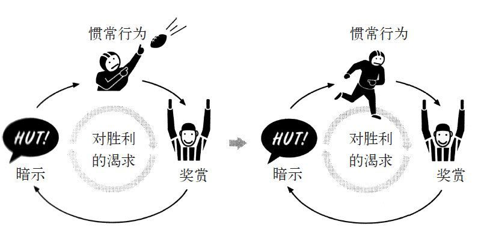
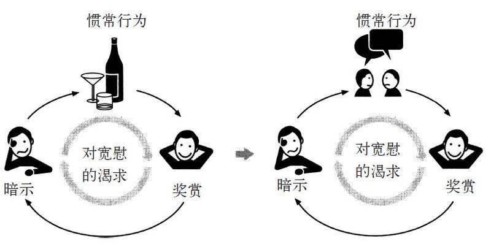
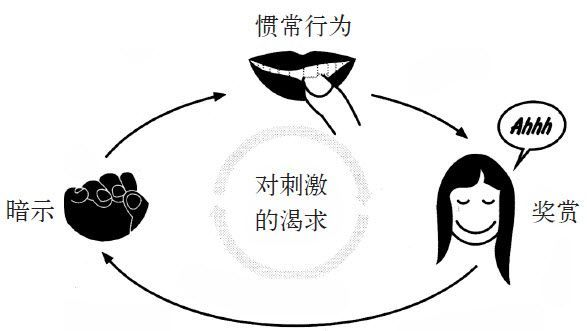
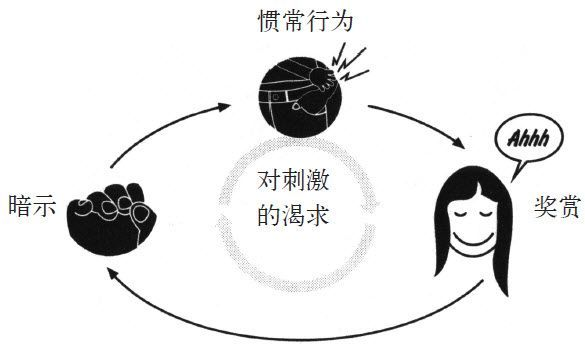
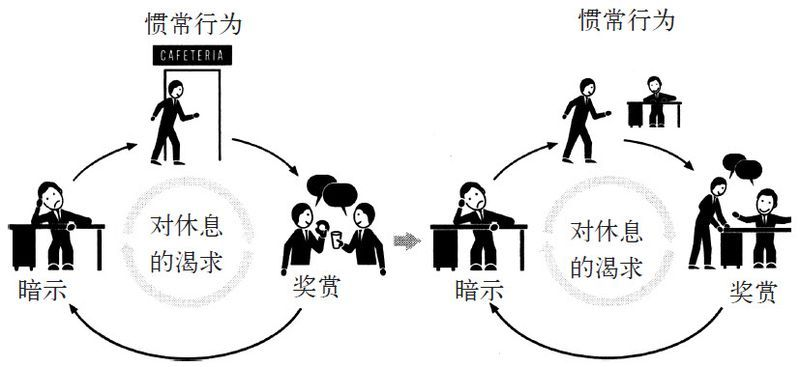
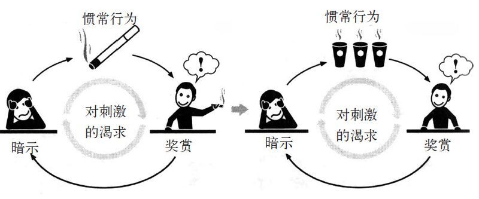

球场另一端的比赛计时器显示，距离比赛结束还有8分19秒，这时，美国国家橄榄球联盟中最糟糕也是职业球队历史上最糟糕的球队——坦帕湾海盗队的新任主教练托尼·邓吉开始感觉到一线希望。
这天是1996年11月一个周日的下午。海盗队在圣迭戈迎战闪电队（这支队伍参加了前一年的超级碗比赛）。海盗队快输了——16∶17。他们从来都没赢过，整个赛季都输掉了。其实16年来，海盗队在西海岸没赢过一场比赛，它上次在赛季中赢球时，队里的很多现役队员还在上小学。它的历史记录是2胜，8负。在其中一场比赛中，海盗队遭遇了底特律雄狮队，雄狮队出手凶狠，让“有一丝希望”的海盗队变成了“绝望”，海盗队以6∶21输给雄狮队。三个星期后它们再次遭遇时，比分是0∶27。一位报纸的专栏作家将海盗队比喻成“美国的橙色脚垫”，人人都可以踩。ESPN（娱乐与体育节目电视网）预测说1月份刚刚被聘用的教练邓吉，不用一年的时间就会被炒掉。
邓吉在场边盯着他的队伍为下一场比赛作准备，看上去阳光最终穿过了云层。他没有笑——在比赛时，他从来都喜怒不形于色。但场上局势正在发生变化，他为此已经努力了很多年。对手的5万粉丝嘲笑他，而当时他看到了别人没有注意的东西，发现了证明他的计划开始奏效的证据。
托尼·邓吉等这份工作已经等了很久。17年来，他一直作为助理教练兢兢业业地工作在赛场边。他先是为明尼苏达大学工作，然后为匹兹堡钢人队工作，之后是堪萨斯城酋长队，接着又回到明尼苏达，接了维京队的活。在过去的10年里，美国国家橄榄球联盟的球队有4次邀请他面试主教练一职。
但这4次面试都不顺利。
部分原因是邓吉的训练理念。在他的工作面试中，他会耐心地解释说他坚信球队取胜的关键是改变球员的习惯。他想让球员在比赛中不要作那么多选择，而是让他们自动地、习惯性地对情况做出反应。如果他可以让球员养成正确的习惯，他的球队就会赢得比赛。
邓吉解释说：“球队并不需要做什么非凡的事，他们会做好每天的训练，养成习惯，在做动作时不再需要思考，这样他们的速度就会很快，对手则无法反应。也就是说，球员在遵循他们已经养成的习惯打比赛。”
球队的老板们会问：要怎样创造那些新习惯？
邓吉会回答说，他并不是要创造新习惯。球员花了很多时间养成比赛的习惯，而这些习惯让他们进了国家橄榄球联盟。没有哪个运动员会因为某个新教练说了一句话，就放弃之前所有的习惯。
所以邓吉不是要创造新习惯，而是要改变球员的旧习惯。而改变旧习惯的秘密是利用球员脑子里已经存在的习惯。习惯是一种分为三个步骤的回路，由暗示、惯常行为和奖赏组成，邓吉想做的只是调整中间那个步骤，即惯常行为。根据经验，他知道如果新行为模式的开头和结尾存在一个人熟悉的东西，那么就更容易说服这个人接受新的行为模式。
他的训练策略体现了一条改变习惯的黄金法则，很多研究都显示这条法则是改变习惯最有效的手段之一。邓吉知道坏习惯是永远都不可能被根除掉的。
要改变习惯，你必须留住旧习惯回路中的暗示，提供旧习惯回路中的奖赏，但要插入一个新的惯常行为。
这就是黄金法则；如果你用同样的暗示，提供同样的奖赏，你就可以换掉惯常行为，改变自己的习惯。如果暗示和奖赏不变，几乎所有的习惯都是可以被改变的。
黄金法则的影响面很广，对治疗酗酒、肥胖、强迫症以及其他数百种具有破坏性的行为都有效果。如果了解这条法则，任何人都可以改变自己的习惯（比如尝试戒掉零食的行为往往会失败，除非出现新的能满足旧暗示和奖赏欲望的惯常行为，才可以戒掉。烟民一般无法戒烟，除非他对尼古丁的渴求被触发时，能找到其他可以替代吸烟的活动）。
4次面试，邓吉都跟球队老板解释了他基于习惯的训练理念，老板们也都礼貌地听着，每次都向他表示感谢，然后却雇了别人。
到了1996年，一直惨败的海盗队找了邓吉。邓吉坐飞机到了坦帕湾，他再一次介绍了他赢得比赛的训练策略。在最后一轮面试之后的一天，球队签下了邓吉。

邓吉的训练体系最终让海盗队变成了联盟中的一支常胜球队。他是美国国家橄榄球联盟历史上中唯一一位能够连续10年都带领球队打入季后赛的教练，是第一位带领球队赢得超级碗冠军的美国非洲裔教练，也是职业运动员最尊敬的人物之一。他的训练技术将普及到全联盟和其他体育运动中。他的方法让大家明白了如何才能重塑人的习惯。
不过这些都是后话，这一天，在圣迭戈，邓吉脑子里想的只有取胜。
站在场边的邓吉看着比赛计时器，还剩下8分19秒。海盗队一直屈居下风，像以前一样浪费了一个又一个机会。如果他们的防守现在还不能有起色，那比赛很快就要结束了。闪电队把球控制在了自己的二十码线上，他们的四分卫斯坦·汉弗莱斯正准备开球。
邓吉没有盯着亨弗里斯，而是看着自己的球员排兵布阵，他们之前花了好几个月完善球队阵形。从传统来看，橄榄球是一种佯攻与反佯攻的比赛，兵不厌诈与声东击西是它的特点。拥有最细致的比赛计划和最复杂的比赛战术的教练通常能取胜。但邓吉却反其道而行之，他对复杂的战术或者迷惑对手没有兴趣。邓吉的防守球员摆好阵形时，人人都看得出他们要用的战术。
邓吉之所以选择这个战术，是因为理论上他不需要声东击西，他只需要他的队伍反应比别人快就行。在橄榄球这种运动中，一微秒都至关重要。所以邓吉没有教球员几百种五花八门的阵形，而只教了他们几种。但他要求队员们反复训练这几种阵形，直到他们的动作会自然而然地出现。当他的策略奏效时，别人几乎无法追上他的球员移动的速度。
但只有在他的策略奏效时才会这样，如果他的球员想得太多或者犹豫不决，又或者对自己的直觉再三猜疑，那么这个训练体系就分崩离析了。而且之前，邓吉的球员一直都乱作一团。
不过这一次，随着海盗队的球员在二十码线上布好阵，局势有了变化。拿海盗队的防守端锋里根·艾普萧为例，他已经在争球线摆开了三分姿势。里根没有在线上四处观望以尽可能地吸收信息，而是只盯着邓吉给他的暗示。他先看了一眼边上对方线卫向外的脚（他的脚尖已经转回去了，这意味着他在四分卫通过时准备后退并防守），然后他又看了一眼线卫的肩膀（微微向内转了）以及他和旁边球员之间的空隙（这个缺口比预期的要窄）。
艾普萧练习过很多次如何对这些暗示做出反应，在这一刻，他并不需要去思考应该做什么，他只要按照自己的习惯比赛就可以了。
闪电队的四分卫亨弗里斯逼近了争球线，同时看了看左右，大声倒数完后拿到了球。他往后退了5步，挺胸站直，环视四周，想找一个无人防守的接球手。从比赛开始算起，已经过了3秒钟。现场的所有观众以及摄像机都集中在了他的身上。
大部分人都没有看到海盗队里正在发生什么变化。亨弗里斯抱起球时，艾普萧就立刻行动起来。在一秒钟内，他往右狂奔，穿过争球线，速度如此之快，防守的线卫都无法拦住他。下一秒，艾普萧加速跑过前场，他的脚步快得都看不清了，然后他闪电般地用三大步逼近四分卫，对方防守的线卫几乎不可能预测他的前进路径。
随着比赛进入到第四秒，闪电队的四分卫亨弗里斯突然愣住了，他犹豫了一下，从余光里看到了艾普萧，这一刻，亨弗里斯犯了一个错误，那就是他开始去思考。
亨弗里斯发现自己这边一个名叫布莱恩·罗奇的打近端锋位置的菜鸟站在前场20码处；闪电队的另一个接球手站得更近，还在挥着手，要他把球丢过去。短传是此刻的安全选择，但是亨弗里斯因为压力，在很短的时间里作了一个分析，举起了手臂，把球丢给了罗奇。
这个匆忙的决定恰恰是邓吉希望的。球一飞到空中，海盗队一位名叫约翰·林奇的安全卫开始移动。林奇的职责是直线往前：比赛一开始，他就跑到球场上特定的地点，等待他需要的暗示。在这种情况下，随机应变需要承担极大的压力，但是邓吉已经将林奇的行为训练成了自动出现的习惯。结果，球一离开对方四分卫的手，站在离罗奇只有10码远的林奇就在等着了。
球旋转着在空中飞过，林奇看到了他的暗示，那就是四分卫的面具和手的方向，以及接球手之间的空隙。他在球还没落地之前就动了起来。闪电队的接球手罗奇也往前冲，但是林奇切进了他的路线，截住了这次传球。罗奇还没反应过来，林奇已经穿过球场，冲向闪电队的球门区。海盗队其他队员的位置都很好，为他让出了一条路。林奇跑了10码、15码、20码，几乎跑了25码，然后终于冲出重围。整个过程发生的时间不到10秒钟。两分钟之后，海盗队赢得了一次达阵得分，历史上第一次在比赛中领先。5分钟后，他们打出了一个射门得分。在这两次行动之间，邓吉安排的防守将闪电队所有卷土重来的企图全部封死。最终海盗队以25比17胜出，这是本赛季最让人吃惊的一场比赛之一。
比赛结束时，林奇和邓吉一同离开球场。在走进通道时，林奇说：“在场上感觉似乎有些不同了。”
邓吉回答道：“我们开始相信自己能赢。”
为了弄清楚为什么教练将重点放在改变习惯上就能重塑球队，我们有必要看看体育之外的世界。这得扯远一些，让我们来到1934年纽约市下东区一间阴暗的地下室，就是在这里，最大也是最成功的一次大规模习惯改变诞生了。
坐在地下室里的是39岁的酒鬼比尔·威尔逊。多年前，威尔逊在马萨诸塞州新贝德福德的士官训练营里喝了第一口酒，当时他正在学习如何用机关枪射击，随后将被送往法国参加第一次世界大战。住在基地附近的富人经常会邀请士官们共进晚餐。在一个周日的晚上，威尔逊参加了一次聚会，那天他吃的是干酪土司中，喝的是啤酒。他已经22岁了，以前从来都没喝过酒。那一刻，唯一看上去符合礼仪的事就是将放在他面前的酒喝掉。几周之后，威尔逊应邀又去了另一场高级宴会。男士都穿着燕尾服，女士则忙于交际。一位管家走了过来，将一杯布朗克斯鸡尾酒递到威尔逊手里。这酒是杜松子酒、甘美的苦艾酒以及橘子汁混合而成的。威尔逊抿了一口，后来他描述当时的感觉说他仿佛喝到了琼浆玉液。
到20世纪30年代，威尔逊从欧洲归来，他的婚姻已经岌岌可危。通过卖股票赚来的那笔钱也花完了，而威尔逊当时每天要喝掉三瓶酒。在11月一个寒冷的下午，他情绪低落地坐着，这时一个老酒友过来叫他。威尔逊请他进屋，调了一大罐菠萝汁和杜松子酒混合的饮料，然后给他的朋友倒了一杯。
他的朋友把酒放了回去，说自己已经戒酒两个月了。
威尔逊对此很惊讶，他开始诉说自己在酒精上的挣扎，还说他在一间乡村俱乐部喝醉打架，结果丢了工作。他试过戒酒，但从没成功。他接受过戒酒治疗，还吃过帮助戒酒的药，又跟他妻子发誓说要戒酒并加入了禁欲小组。结果这些都没用。威尔逊问他的朋友是怎么戒掉的。
他朋友说“我有了信仰”，然后开始大谈地狱、诱惑、原罪和恶魔。他说：“你意识到自己被迷惑了，要承认这一点，然后你才会愿意将你的生命交给上帝。”
威尔逊觉得这家伙疯了，他后来写道：“去年夏天他满脑子都是和酒有关的疯点子，现在我怀疑他满脑子都是宗教的东西。”在这位朋友离开后，威尔逊把酒一饮而尽，然后睡觉去了。
过了一个月，到了1934年12月，威尔逊住进了治疗药物与酒精成瘾的查尔斯·B·唐斯医院，这是一间位于曼哈顿的高级戒酒中心。医生每隔一个小时就会给威尔逊灌入一种名为颠茄的致幻剂，那时都流行这样治疗酒精成瘾。威尔逊就这样在一个小房间的床上迷迷糊糊地待着。
然后，威尔逊进入了数不清的戒酒集会上都会描述的一个阶段——他开始痛苦地打滚。这么多天来，他一直都有幻觉。停止服药后他就感觉像有无数虫子钻进皮肤。他想呕吐，但没法动弹，太痛苦了，他已无法忍受。他对着空荡荡的房间喊道：“如果有上帝，那就现身吧！我什么都愿意做，什么都行！”后来他写道，在那一刻，房间里充满了白光，痛苦消失了，他觉得自己登上了山顶。他说：“是灵魂而不是空气在吹动，然后我突然感觉自己自由了。慢慢地，这种狂喜的愉悦感渐渐消退了，我躺在床上，但我觉得自己曾置身另外一个世界，一个让我的意识知觉焕然一新的世界。”
威尔逊从此戒了酒。在他后来36年的岁月里，一直到他1971年死于肺气肿之前，他不遗余力地投入到创办、支持、推广匿名戒酒互助社的活动中，使它变成了世界上最大、最知名的能成功帮助人改变习惯的组织。
据估计，每年有210万人到匿名戒酒互助社寻求帮助，有高达1 000万人在匿名戒酒互助社里成功戒酒。当然，匿名戒酒互助社并不能帮到所有人，而且因为有匿名机制，所以很难测算戒酒的成功率，但有数以百万计的人能证明戒酒的项目拯救了他们的生活。匿名戒酒互助社的创办信条（即著名的戒酒12步法），已经成了一种文化磁铁，嵌入到了对各种破坏性行为的治疗中。治疗的内容包括暴饮暴食、赌博成瘾、欠债成瘾、性瘾、毒瘾、存储东西成瘾、自残成瘾、吸烟成瘾、电视游戏成瘾、情绪依赖成瘾等。从多个角度来看，这个组织的方法是改变习惯最有效的方法。
不过这一切都有点儿让人出乎意料，因为匿名戒酒互助社几乎没有科学根据，或者也没有被广为接受的治疗方法作为基础。当然，酗酒不仅仅是一种习惯，这是一种具有心理根源，可能还有基因根源的生理成瘾。更有趣的是，匿名戒酒互助社的治疗项目并不直接针对很多精神病学或生物化学方面的问题，而研究人员说这些东西往往是酒精成瘾的核心。实际上，匿名戒酒互助社的方法似乎将科学与医学发现都抛在了一边，也没有去管很多精神病专家所说的酗酒之人真正需要的各种干涉疗法[3]。
匿名戒酒互助社提供的办法是针对与酒精使用有关的习惯展开治疗。从本质上，匿名戒酒互助社是改变习惯回路的一架大型机器。虽然与酒精成瘾的习惯都比较极端，但那时匿名戒酒互助社提供的治疗课程显示，几乎所有的习惯，甚至最顽固的那种，都是可以被改变的。
在创办匿名戒酒互助社之前，比尔·威尔逊没有读过学术期刊，也没有咨询过任何医生。在成功戒酒之后的几年里，有一天晚上，他坐在床上，很快就写出了如今著名的戒酒12步法。他将数字限定在12，是因为有12位门徒。这戒酒12步法并没有什么不科学，只是有些奇怪。
比如，匿名戒酒互助社坚持认为酗酒的人需要在“90天里参加90次见面会”，这个时间看上去似乎是随便定的。此外，它非常强调人的灵性，这在戒酒12步法的第3步中就说明了——酗酒之人可以通过做出“将我们的意志与生活交给我们熟知的上帝照料”的决策来让自己戒酒。12步法里头有7步都提到了上帝或灵性，这看上去有些奇怪，因为这个项目的创始人曾经是一位不可知论者，并一直都公开对宗教组织抱有敌意。匿名戒酒互助社的聚会并没有事先定好的议程或内容。这种聚会通常从与会者讲述自己的故事开始，然后其他人再参与进来。在整个对话中，没有专业人士指导对话走向，也没有任何规矩限制聚会应该如何开。在过去的50年里，行为科学、药理学以及对大脑研究的发现几乎完全改变了精神病学和成瘾研究的方方面面，而匿名戒酒互助社的做法却一成不变。
因为戒酒12步法缺乏严谨性，学术界和研究人员经常予以批评。有些人说匿名戒酒互助社强调人的灵性让它更像是在传播邪教而不是在治疗。不过，在过去15年里，人们开始重新评估这种做法。如今研究人员说戒酒12步法提供了宝贵的经验。哈佛大学、耶鲁大学、芝加哥大学、新墨西哥州立大学以及其他许多研究中心的研究人员，都在匿名戒酒互助社的戒酒12步法中发现了其科学的一面。这与托尼·邓吉在球场上使用的方法相似。他们的发现了改变习惯的黄金法则，而匿名戒酒互助社之所以成功，是因为该组织让酗酒者用了同样的暗示，而且得到了同样的奖赏，但改变了其中的惯常行为。
研究人员说匿名戒酒互助社的方法之所以有效，是因为它强迫参与者识别能鼓励他们酗酒习惯的暗示和奖赏，然后帮助他们发现新的行为。克劳德·霍普金斯在营销白速得牙膏时，找到了一种可以触发新渴求感的新习惯。但是要改变旧习惯，你必须处理掉旧的渴求感——要保留以前同样的暗示和奖赏，并通过插入新的惯常行为来满足这种渴求。
看看戒酒12步法中的第4步（勇敢地做一份“不断增加的自我清单”）和第5步（向“上帝、我们自己以及其他人承认自己错误的本质”）。
新墨西哥州州立大学的研究人员J·斯科特·托尼甘对匿名戒酒互助社研究了10多年，他说：“要实现那12步，按照他们规定的方法显然是不行的，你必须得为他们所有的酗酒欲望挨个创造暗示，当你做了这样一份自我清单，你就会看到所有导致你喝酒的因素。而且，向别人承认你的所有错误，这是个好办法，能让你明白成瘾症状失控时都会发生什么。”
接着，匿名戒酒互助社让酗酒者找出他们从酒中得到了什么奖赏。这个项目要找的是哪些渴求感在驱使着你的习惯回路。通常来说，喝醉本身并不属于渴求。酗酒者之所以想喝酒，是因为酒让他们能逃避现实，放松心情，又有人陪伴，而且缓解焦虑，情感也得到释放。或许他们想喝杯鸡尾酒来忘记烦心事，但并不一定想“买醉”。酒精的物理作用往往是嗜酒成瘾这个习惯回路中最次要的奖赏之一。
“酒精能让人感到快乐，”德国研究酗酒者大脑活动的神经学家穆勒乌尔夫·穆勒说，“但人们也会用喝酒来让自己忘记一些事情，或者满足其他渴求感。而比起对身体愉悦的渴求感，这些精神上宽慰的渴求感会在大脑完全不同的部位发生。”为了给酗酒者提供他们在酒吧中能获得的同等奖赏，匿名戒酒互助社建立了一种集会与陪伴的制度，每一位成员配一位咨询师。这种制度尽力向他们提供和周五狂饮派对同等的逃避现实、分散注意力和精神发泄的作用。如果某个人想得到宽慰，他们可以跟他的咨询师交谈，或者参加团体聚会，而不是和朋友
狂饮。
“匿名戒酒互助社迫使你去建立一种新的惯常行为，让你每天晚上有事可干，而不是酗酒。”托尼甘说，“你可以在聚会时放松自己，谈论你的焦虑。事件的诱因和回报还是一样，只是行为改变了。”
2007年，一项引人注目的研究展示了酗酒的暗示和奖赏被转化成新惯常行为的过程。德国神经学家穆勒和他马格德堡大学的同事，在5个曾反复尝试戒酒的酗酒者的大脑中植入了微小的电子设备。这些酗酒者至少花了6个月戒酒，但都失败了。其中一人去戒酒戒了60多次。

这些电子设备被植入到他们大脑的基底核，也就是麻省理工学院的研究人员发现习惯回路的大脑部位。这个设备通过放出电荷，中断引发习惯性渴求的神经性奖赏。在接受植入手术后，研究人员让他们接触曾经能引起喝酒欲望的暗示，比如说啤酒的图片，或带他们去酒吧。照常来说，他们本不可能抵抗酒瘾，但他们大脑中的设备“抑制”了他们的神经渴求。最后，他们滴酒没沾。
“他们中有人告诉我，当我们启动设备，喝酒的欲望就消失了，”穆勒说，“而当我们关掉设备，他们对酒精的渴求感马上又回来了。”
然而，中断酗酒者神经上的渴求，并不足以让他们戒除酗酒习惯。他们中的4人，在手术后不久酒瘾又复发了，而这通常是在经历有压力的事件之后。他们又开始喝酒，因为这就是他们处理焦虑的常用方法。而他们一旦养成了其他处理压力的惯常行为，就能永久戒掉酒瘾。比如，一个病人选择的是参加匿名戒酒互助社的集会，其他人则选择接受治疗。当他们将这些新的惯常行为融入到生活中，戒酒成效非常惊人。之前戒酒60多次的那个人，再也没喝过酒。另外两个在12岁开始喝酒，18岁后嗜酒成瘾，每天必喝，现在他们已经4年没喝酒了。
我们必须注意到，这个研究和改变习惯的黄金法则是密切相关的：即使手术改变了酗酒者的大脑，也还是不够的。旧的暗示和对奖赏的渴求仍在那里，随时准备反击。只有当酗酒者养成了利用以前的暗示和让他们感到熟悉进而有宽慰感的新的惯常行为时，他们才能永久戒酒。“一些人的大脑对酒的依赖强到只有手术才能阻止，”穆勒说，“但他们同样需要新的生活方式。”
匿名戒酒互助社提供了一种相似但更温和的体制，将新的惯常行为植入旧的习惯回路中。当科学家了解到匿名戒酒互助社的运作方式时，他们开始将这种方法应用到其他习惯上，例如持续两年的暴躁病症、性瘾甚至是罕见的行为性抽动。随着匿名戒酒互助社方法的推广，人们已经将之改进为几乎能改变任何行为模式的疗法。
2006年夏天，一位名叫曼蒂的24岁大学毕业生走进了密西西比州立大学的心理咨询中心。她很小就养成了咬指甲的习惯，一直咬到指甲出血才停。事实上，很多人都会咬指甲。但对于习惯性咬指甲的人来说，他们的习惯已经不是小问题了。
曼蒂通常咬指甲都会咬到指甲脱离底部皮肤。她的指尖遍布结痂的小伤口，指头末端因为没有指甲的保护而挫伤，有时还会刺痛或很痒，这意味着神经已经受损。曼蒂咬指甲的习惯已经影响到她的社交生活。在朋友面前，她很尴尬，总是将手插到口袋里，而约会的时候，她则时刻注意着将手握成拳头。她曾试过涂禁止食用的指甲油来阻止自己，或对自己发誓从现在开始用意志力战胜习惯。但当她开始做作业或看电视时，她又开始咬指甲。咨询中心给曼蒂介绍了一名医师，他是心理学博士，当时他正研究一种叫作“相反习惯训练”的疗法。这位心理学博士熟知改变习惯的黄金法则。他知道要改变曼蒂咬指甲的习惯，就要将一种新的惯常行为植入她的
生活。
他问曼蒂：“当你要将手伸到嘴边咬指甲前，你有什么感觉？”
“我会觉得手指有点儿不自在，”曼蒂说，“指甲根部这里有点痛。有时我会用拇指摸其他指头，当我摸到皮肤的倒刺时，就会伸到嘴里。然后我就一个接一个，去咬所有指头粗糙的边缘。一旦我开始咬，就觉得必须把所有粗糙的地方都咬掉。”这种让病人描述引发他们习惯性行为的暗示的做法，叫做意识训练，正如匿名戒酒互助社坚持让酗酒者找出酗酒的暗示，这是相反习惯训练的第一步。曼蒂觉得指甲不舒服，这正是让她咬指甲的暗示。
“很多人的习惯已经由来已久，以至于他们都没注意到引发习惯的暗示，”曼蒂的医师说，“我曾治疗过口吃病人。我问他们遇到哪些词或情境会口吃，他们总答不出来，因为他们从没留意。”
这次，医师让曼蒂描述咬指甲的原因。开始时，她想不出原因。然而，当他们聊下去时，就发现她咬指甲是因为无聊。医师将她置于一些典型的情境中，比如说看电视或者做作业，她就会开始咬指甲。她说，当她咬完所有的指甲时，就会感到一种强烈的充实感。这就是这个习惯的奖赏：她渴望得到实质的刺激。

在第一次治疗结束时，医师让曼蒂回家做一件事：随身带一张索引卡，每当感到习惯的暗示，即指尖的紧张感出现的时候，就在卡片上打个钩。一周后，曼蒂带回来的卡上打了28个钩。那个时候，她已经清楚地意识到，做记号的意识已经超越了她咬指甲的习惯。她知道了自己上课或者看电视时咬指甲的次数。
然后医师教给曼蒂一种“竞争反应”的方法。他告诉曼蒂，每当她感到指尖不自在时，就立即将手插进口袋里或腿下，或者抓起一支铅笔或其他任何东西，使得自己没法将手指伸进嘴里。然后，曼蒂要找一些能迅速获得实质性刺激的事情来做，比如说摩擦手臂，或在桌子上敲指关节，只要能迅速产生实质性反应的事都行。
事情的暗示和奖赏还是一样。只是惯常行为改变了。

他们在医疗室里练习了大概半小时，回家前医师又给了她一项新任务：继续使用索引卡，当觉得指尖不自在时，在上面打个钩，当成功克制住咬指甲的习惯时，就画一个斜杠。
一周后，曼蒂只咬了3次指甲，打了7个钩。因此她做了一次指甲护理来奖励自己，并坚持使用索引卡。一个月以后，咬指甲的习惯没再发生，针对咬指甲做出的竞争性惯常行为变成了自发行为。在这里，一个习惯代替了另一个习惯。
“这看上去简单得不可思议，而一旦你意识到你习惯的运作方式，一旦你认清习惯的暗示和回报，那么改变习惯就成功了一半。”相反习惯训练的发明者之一南森·阿兹林告诉我：“改变习惯看起来似乎应该更复杂，但事实上，大脑是可以接受重新编排的。你需要做的仅仅是刻意为之。”[4]
目前，相反习惯疗法被用作治疗声语型抽动和身体抽动、抑郁症、吸烟、赌博、焦虑、尿床、拖延症、强迫症和其他行为性问题。这种疗法用到的手段，揭示了习惯的一个基本原则：在有意寻找驱动我们行为的渴求感之前，我们通常并不真正理解它们。曼蒂从不知道，对实质性刺激的渴望，是引起她咬指甲习惯的原因。不过一旦她对这个习惯进行剖析，就很容易找到一个能提供同等奖赏的惯常行为。

例如，你想戒掉工作时吃东西的习惯，那你就要想想，奖赏是消除饥饿感，还是让自己不再觉得无聊。如果你只是想放松一下，那你能轻易找到替代的惯常行为，比如说快步走，或上网浏览3分钟，这能提供同等的休息机会，而不会让你变胖。
如果你想戒烟，就问问自己：吸烟是因为喜欢尼古丁，因为能获得强烈的刺激，还是因为它是你日常生活固定的一部分，是社交方式的一种？一些研究表明，如果你吸烟是想获得刺激，那午后摄入一些咖啡因，能提高你戒烟成功的概率。超过1/3对已经戒烟者的研究发现，找出他们与香烟相关联的暗示和奖赏，然后选择具有相同回报的惯常行为来替代，更可能让他们成功戒烟。比如说吃一片尼古清、做几组快速的俯卧撑，甚至仅仅是花几分钟伸展放松一下，都能达到这个效果。

如果你找到了暗示和奖赏，就能够改变惯常行为。
至少，在大多数情况下是这样。不过对有些习惯来说，如果要想改变它们，还有一个因素非常必要，那就是信仰。
1996年，邓吉在成为海盗队的总教练后，对他的球员说：“有6个原因让所有人都觉得我们赢不了。”当时正是赛季前的几个月，所有队员都坐在更衣室里。邓吉开始列出他们从报纸和广播中得到的解释：队伍的管理乱成一团，新的教练未经实战，球员娇惯成性，球队所属的城市不在意他们的表现，主力球员有伤病在身，球员没有所需的天赋。
“这些都是人们认为的原因，”邓吉说，“但事实是，没有人将比我们表现得更好。”邓吉解释说，他的策略是改变球队的行为，直到它们变成自发性行为。邓吉认为，海盗队的球员们不需要厚厚的进攻战术手册，不需要记住几百个阵形。他们仅需要学会一些关键的动作，并保证每次运用到位。
然而，在橄榄球中很难达到完美。“每场球赛，都会有人出状况，”邓吉在坦帕湾的助理教练之一赫姆·爱德华兹说，“大多数时候，问题不出在身体上，而是心理上。”一旦球员想得太多，或对自己的动作再三考虑，他们就会乱套。邓吉想做的是，将这些都剔除在球赛之外，然后让球员认清现在的习惯，并接受新的惯常行为。
首先，他观察球队目前的踢球方式。“我们来谈谈防守吧。”一天早上，在练习的时候，邓吉高声喊道，“55号，你练习时看着哪里？”外线卫戴里克·布鲁克斯回答说：“我看着跑卫和守卫。”
“说得精确点，你眼睛看着哪里？”
“我看着守卫的动作，”布鲁克斯说，“当四分卫抢到球后，我盯着他的腿部和臀部。还有就是，找越位线的距离，看他们会不会超过，以及四分卫会不会将球抛到我这边或者给其他人。”
在橄榄球赛中，这些视觉暗示被当成是“关键”，是每场比赛的重要因素。邓吉的设想是，利用这些关键作为重塑习惯的暗示。他知道，有时布鲁克斯在做出下一个动作前，会犹豫太长时间。他总是考虑太多事情——守卫是不是脱离了队形？跑卫的脚步动作是暗示他准备奔跑，还是传球？于是的他动作就变缓慢了。邓吉的目标是，让布鲁克斯的头脑从这些分析中解放出来。就像匿名戒酒互助社一样，他要利用布鲁克斯已经习惯的同样暗示，但教给他新的惯常行为，最终让他练习到能自动做出动作。
“我想你运用同样的视觉暗示，”邓吉对布鲁克斯说，“但开始时，你只要集中看跑卫。不要想任何东西。然后当你跑到位后，开始盯四分卫。”
这是一个相对很小的改变。布鲁克斯的眼睛还是看向同样的暗示，但比起同时看多处地方，邓吉将它们分了次序，而且事先告诉了他在看到每个暗示时应该选哪个。这种方法的高明之处在于去除了决策的需要。它使布鲁克斯动作更迅速，因为一切都只需要做出反应，最后成为习惯，而不需要抉择。
邓吉给每个球员作了相似的指导，并就队形进行了反复的练习。最后几乎花了一年时间，球员才掌握了邓吉教的习惯。最初，他们连简单的预赛都输掉了。体育专栏作家不禁问：为什么海盗队要在荒谬的心理理论上浪费这么多时间？但慢慢地，他们的表现变得越来越好。最后，球员们对这些模式完全熟悉，只要一上场，一切就变得自然而然。在邓吉当教练的第二个赛季，海盗队赢得了首次5连胜，并且15年来首次打入季后赛。1999年，他们赢得了地区冠军。邓吉的训练模式，开始引起了全国的注意。体育媒体为他温和的谈吐风度、宗教般的虔诚，以及他在事业和家庭上的平衡而着迷。报界描述邓吉带着艾力克和杰米这两个儿子到体育场，让他们在自己训练球员时闲逛。他们在邓吉的办公室里做作业，在更衣室捡毛巾。成功最终降临了。
2000年和2001年，海盗队均再次打进季后赛。每周，他们的粉丝都会坐满体育馆。赛事解说员曾称这支队伍具备争夺超级碗大赛冠军的实力，一切仿佛都将要实现。
但即使海盗队成为了一支强劲的队伍，另一个问题又出现了。球员们通常能打出节奏紧凑、有纪律的比赛，但到了压力巨大的关键时刻，队伍就散了架。1999年，海盗队在赛季末取得小组赛的6连胜后，将联盟赛的冠军拱手让给了圣路易斯公羊队。2000年，在离超级碗大赛仅差一场比赛之时，海盗队以3∶21输给了费城老鹰队。第二年，同样的事情又发生了，海盗队以9∶31输给了老鹰队，再次将晋级机会让给了别人。
“我们搞训练，一切都井然有序，然后我们将能打进大的比赛。但一到这时，训练的效果似乎都消失了。”邓吉告诉我，“比赛后，队员说‘因为这场比赛很重要，我的打法就变回去了’，或者‘我觉得我得作点儿选择’。但他们实际在说，大部分时间里，他们都信任我们的训练模式，而一到关键时刻，信任就土崩瓦解了。”
在2001年赛季结束时，海盗队连续第二年无缘晋级超级碗大赛，球队的总经理将邓吉叫到他的家里。邓吉将车停在一棵巨大的橡树附近，进屋30秒后就被开除了。
海盗队在下一年会沿用邓吉的队形和球员，通过他塑造起来的习惯，继续争取晋级超级碗大赛。新聘请的教练曾率队捧得超级碗大赛的隆巴迪奖杯。邓吉将会坐在电视机前看球队表现，但在那之前，他已远离海盗队了。
教堂里聚集着大约60个人，有送完孩子去踢球的妈妈、午休出来的律师，还有身上文身已经褪色的老年男人，以及穿低腰紧身牛仔裤的时尚年轻人。人们正在听一个男人的发言，他微微发福，系着和他浅蓝色眼睛相称的蓝色领带。他看起来就像一个成功的政治家，散发着对连任成功的自信和淡定。
“我叫约翰，”他说，“我是一名酗酒者。”
大家回应说：“你好，约翰。”
“我第一次决定要去寻求帮助戒掉酒瘾，是在我儿子手臂受伤时候。”约翰站在讲台上说。“我和一名女同事有婚外情，她和我说，她想结束这段关系。于是，我到酒吧喝了两杯伏特加酒，然后回到办公室。午饭时，我和一个朋友去红辣椒餐厅。我们都要了一些啤酒。大概2点时，我和另一个朋友离开餐厅，找了一家有‘点一送一’特惠的酒吧继续喝。那天轮到我接孩子，这里插一句，我妻子还不知道我有情人的事。于是，我就开车到学校，接到他就开车回家。而在那条我走了上千次的街上，我猛冲到街尾的一个停车标志上。那标志就在人行道上，车子一下撞到上面。我儿子山姆没有系安全带，整个人飞到挡风玻璃上，撞伤了手，他的鼻子也撞出了血。挡风玻璃裂了，我完全吓傻了。那时，我就决定寻求帮助，要把酒戒掉。
“于是我找了一家诊所进行治疗，之后的一段时间，一切都感觉良好，这种情况持续了13个月。我觉得我的酒瘾控制住了，而且每隔几天都会去参加戒酒的聚会。但后来，我突然觉得，我又不是一名很糟糕的失败者，没必要和一群醉汉打交道。于是，我就没再去聚会了。
“然后，我母亲得了癌症。她在我上班的时候打电话告诉了我这件事，那时我已经两年没喝酒了。当时她正从医生的办公室开车回家。她说，‘医生告诉我，我们可以选择治疗，但已经比较接近晚期了。’我挂电话后第一件事就是去酒吧。接下来的两年，我喝得比以前更醉，直到我妻子搬出家，于是又轮到我接孩子了。那时候，我的状态糟糕透了。我朋友教我用可卡因，于是每个下午我都会在办公室吸一行，但5分钟后我就会把那点儿酒喝得一干二净，然后又开始吸另一行。
“不管怎样，那天轮到我接孩子放学。我开车驶向他们的学校，感觉很不错，就像所有事情都在我掌握之中。然后我在红灯的时候，开进一个十字路口。一辆大卡车猛地撞到我的车上，把我的车撞翻了。我倒是毫发无伤。接着，我爬下了车，试图将车翻过来，因为我觉得，在警察来之前将车弄回家，我就会没事。当然，这行不通。当他们以醉酒驾车逮捕我时，他们让我看了完全凹陷下去的副驾位。那是山姆经常坐的位置。如果他刚才坐在那儿，他已经没命了。
“因此，我又开始去聚会，咨询师告诉我，感觉自己能自控了还不行。如果我的生活中缺乏一种更高层次的力量，如果我不承认自己软弱，治疗不会有效。那时我觉得这简直是胡说八道，因为我是个无神论者。但我明白，要是不做出某种改变，我会害死我的孩子。于是我开始按照他说的做，开始相信高于我自己的存在。事实上，这方法真的奏效了。我不知道那是上帝还是其他东西，但的确有一种力量，使我戒了7年酒。我对这种力量心存敬畏。我不是每个早上都能神清气爽地醒来。我意思是，虽然这7年我都没喝酒，但有时我早上醒来后，会觉得自己要垮掉了一样。那些天，我去寻找更高层次的力量，打电话给我的咨询师。通常我们不会聊喝酒，而是聊生活、婚姻和我的工作。等我到时间该洗澡时，我的头脑又清醒过来。”
匿名戒酒互助社单靠重塑参与者的习惯就取得成功的理论，在大约10年前开始出现漏洞，而导致漏洞的原因就是约翰这样的酗酒者的案例。研究人员发现，这种习惯替代对于多数人有效，但当生活的压力太大的时候，他们就会旧瘾复发。比如说发现母亲患上癌症，或婚姻破裂时，就会出现复发的情况。学者们不禁问，如果习惯替代法这么有效，为什么在关键时刻似乎失效了？当研究人员深入了解酗酒者的案例时，他们认识到，只有当作为替代的习惯和其他因素配合时，这些习惯才会永久持续。
比如说，加利福尼亚酒精研究小组中的一组研究人员，在采访酗酒者时发现了一个行为模式。酗酒者反反复复都在说同样的话。找到行为的暗示和选择新的惯常行为是很重要的，但如果缺少一个因素，新的习惯是没法完全形成的。
酗酒者说，秘密就在于上帝。研究人员不喜欢这个解释。上帝和灵性并不是可检验的假设，教堂里也有一班信仰虔诚却饮酒照旧的醉汉。但在和酗酒者的交谈中，他们反复提到了灵性。于是，2005年，一组科学家和加州大学伯克利分校、布朗大
学、美国国家卫生研究院合作，开始询问酗酒者各种宗教和灵性反面的问题。他们对数据进行分析，看看宗教信仰和戒酒持续的时间有没有关联。
他们发现了一种模式。数据表明，运用习惯替代方法的酗酒者能保持戒酒，但当一件压力大的事件发生时，不管他们养成了多少新的惯常行为，一些人还是又开始饮酒。
另一些酗酒者，他们像布鲁林克区的约翰一样，相信某种更高层次的力量融入了他们的生活。这些人更可能熬过压力大的时期，保持戒酒的习惯。
研究人员发现，起作用的并不是上帝，而是信仰本身。一旦人们学会信仰某种东西，这种信仰就会扩展到生活的其他方面，直到他们开始相信自己能改变。信仰是将改造过的习惯回路变成永久性行为的要素。
“一年前，我不会说这话。这也表明了，我们的认知改变得有多快。”新墨西哥大学的研究者托尼甘说，“信仰很重要。你不一定要信仰上帝，但你必须相信事情会好转。
“即使你教会人们更好的习惯，它也不会改变人们饮酒的初衷。最后，他们还是浑浑噩噩，新的惯常行为并没有让事情好转。因此，重要的是相信自己不喝酒也能处理好压力。”
通过将酗酒者聚集起来，教导他们树立信仰，匿名戒酒互助社训练人们学会信仰某种东西，直到他们信任这个项目和他们自己。实际上，信仰正是匿名戒酒互助社项目中12步法的主要环节。它让人们练习相信事情最终会好转，直到转折真正出现。
“在某种程度上，匿名戒酒互助社的参加者会看房间的其他人，并想如果这方法对他们有用，对我应该也有用。”酒精研究小组的资深科学家李·安·卡什库塔斯说，“小组分享经历的确具有某种强大的力量。当人们独自一人时，很可能怀疑自己是否有能力改变自己，但当他们聚在一起时，大家就会说服他们将疑虑搁置在一边。所以，是社群创造了信仰。”
当匿名戒酒互助社聚会结束，约翰准备离开时，我问他为什么之前戒酒失败后，现在戒酒项目又对他起作用了。“那桩卡车事故后，我再次参加聚会，有人想找自愿收拾椅子的人，”他对我说，“我举起了手。这只是一件花5分钟就办好的小事。但做一些并不是完全为自己的事，让我觉得很开心。我觉得，这让我走上了一条新的道路。
“开始时，我不愿意去参加这个团体，但当我重新回到他们当中时，我开始乐意去相信某些力量。”
在邓吉被海盗队开除后的一周内，印第安纳波利斯小马队的老板就在邓吉的录音电话里录了一条15分钟的激情洋溢的留言。印第安纳波利斯小马队虽然有全美橄榄球联盟中最佳四分卫之一的佩顿·曼宁，但上个赛季球队的表现却非常差劲。这支队伍的老板需要帮助。他说，他已经不想再输下去了。于是，邓吉转战印第安纳波利斯小马队，成为他们的总教练。
他立刻开始执行同样的基本比赛计划：改变小马队球员的惯常行为，教球员利用以前的暗示来形成新的习惯。在他任教的第一个赛季，小马队10胜6负，并且打入了季后赛。在下一个赛季，小马队12胜4负，而且打入了超级碗的决赛。邓吉声名鹊起，报纸电视上都在介绍他。他的粉丝蜂拥而至，为的是去参观邓吉去过的教堂。他的儿子们频频出现在小马队的更衣室和球场边上。2005年，他的大儿子杰米，考上了佛罗里达的一所高校。
即使邓吉的理论在不断创造成功，但同样的问题还是出现了。小马队打出了有组织的比赛，赛季内不断赢球，但在季后赛的压力下，球员还是透不过气来。
“信仰是职业橄榄球赢球的最大原因，”邓吉告诉我，“队伍想要坚持信仰，但当比赛真正紧张起来时，他们心理上就会回到自己觉得舒适的状态，重拾旧习。”
在2005年的常规赛季，小马队以14胜2负取得了球队历史上的最好成绩。
接着，悲剧降临了。
在圣诞节的三天前，有人半夜打电话找托尼·邓吉。接电话的是邓吉的妻子，她以为是球员找邓吉，就将话筒递给了他。电话那头是一名护士。她告诉邓吉，在晚上早些时候，他儿子杰米因为喉部的挤压性损伤而被送来了医院。杰米的女朋友发现杰米用皮带在公寓上吊。护理人员已经紧急将杰米送往医院，但还是没法救活他。杰米去世了。
和邓吉一家共度圣诞节的是一位牧师，他告诉邓吉家人：“生命永远不会有重来的机会，但你以后不会总是像现在这样难受。”
葬礼结束一段日子后，邓吉重返球场。他需要一些事情去分散注意力，他的妻子和球队鼓励他重返工作。“我被他们的爱和支持感动了，”后来他写道，“作为一个团队，我们总是在困难时期互相依偎，我比以前更需要他们。”
球队在第一场季后赛中败北，结束了赛季。但在目睹邓吉经历这场惨剧后，“某些东西发生了改变，我们看着教练遭遇这种惨剧，所有人都想帮助他”，有一名球员告诉我。
如果说一个年轻人的死亡对球赛产生了重大影响，可能显得太简化，甚至夸张。邓吉总是说，没有任何东西比家庭重要。而队员们说，随着杰米的去世，正为下个赛季作准备的小马队发生了变化。球队开始愿意按照邓吉的观点去尝试从没试过的比赛打法。他们开始愿意有信仰了。
“在上一个赛季，我浪费了大量时间，老是担忧我的合同和工资。”和其他人一样，其中一名球员匿名说道，“当教练从葬礼回来时，我就想把我能给的一切都给他，尽量减轻他的痛苦。某种意义上，我是将自己奉献给了球队。”
“一些球员喜欢相互拥抱，”另一个球员对我说，“但我不喜欢。我10年来都没拥抱过我的儿子们。但当教练回来时，我走过去，尽可能地久久抱住他。因为我想让他知道，我会在他身边支持他。”
在邓吉的儿子死后，球队的比赛方法有所改变。球员开始信任邓吉策略的效果。在为2006年赛季做准备的训练和并列争球中，小马队打出了严谨、精准的风格。
“多数橄榄球队并不是真正的团队，他们只是一起工作的人。”那段时间，又一位球员告诉我，“但我们成为了一个团队。那种感觉很惊人。教练是我们的动力，但这不仅仅意味着他一个人。在他回来后，队里感觉每个人都互相信任，就像学会了一种前所未有的合作方法。”
对小马队来说，他们对球队的信仰，对邓吉的策略和他们取得胜利的能力的信仰，都来源于邓吉儿子的惨剧。但在没有悲剧出现的情况下，也能形成类似的信仰。
例如，1994年，哈佛大学对大幅改变自己生活的人进行了研究。研究人员发现，一些人在遭遇个人的悲剧后，重塑了自己的习惯，比如说遭遇离婚、身患致命的重病。还有一些人看到朋友的悲惨经历后发生了改变，正如邓吉的球员看到他遭遇丧子之痛一样。
实际上，与其说是悲剧导致了人们的改变，不如说是加入社交团体使改变变得更容易。一位女士说，当她在一个心理课程班遇到一群友好的伙伴后，她的生活完全改变了。“这翻开了新的一页。”她对研究人员说，“我再也忍受不了现状，整个人彻底发生了改变。”另一位男士讲述了他寻找新朋友，希望从中提高社交能力的经历：“当我努力克服自己的害羞时，我觉得那不是我，而是另外一个人。”但通过和新团体交往，他感觉自己的表现不再是演戏。他开始相信，自己并不容易害羞，到最后，他真的没再害羞。当人们加入一些能够促成改变发生的团体时，改变习惯的可能性就会增大。大多数彻底改变了自己生活的人，并没有遇到意义重大的事件或致命的灾难，而仅仅是因为加入了团体，这个团体让他们相信改变是可能的，有时这个团体即使只有两个人，也会有同样的效果。一位女士告诉研究人员，她花了好几星期和其他清洁工同事讨论是否应该离婚，一天她清洁完厕所后，她的生活发生了改变。
“当和其他人交往时，改变会发生。”哈佛研究中心的心理学家托德·希瑟顿告诉我，“当我们看到别人眼中的自己改变时，这种感觉更真切。”
人们对信仰的具体运作机理仍然所知甚少。没有人能确定，为什么一群在心理课程班偶遇的人能让那位女士相信所有的事都变得截然不同，或者为什么邓吉的球队在他儿子过世后团结起来。现实里，也有很多人对朋友抱怨婚姻不幸福，却没有离婚；很多球队看着他们的教练遭遇悲剧，却照旧是一盘散沙。
但我们的确知道，为了永久改变习惯，人们必须相信改变是可能的。同样的过程也让匿名戒酒互助社的治疗屡屡获得成功，它利用团体的力量教人们学会去信仰，将人们聚集起来互帮互助，协助对方进行改变。因此，当处于团体之中时，信仰更容易建立。
杰米去世10个月后，2006年的赛季开始了。小马队在比赛中表现出类拔萃，第一次获得了9连胜，年末时小马队12胜4负。他们在第一场季后赛中得胜，接着又击败巴尔的摩乌鸦队，夺得了地区冠军。这时，他们离超级碗大赛仅有一步之遥。只要在联盟赛中获胜就能晋级，但邓吉曾在这场比赛中输了8次。
2007年1月21日，小马队在联盟赛对阵新英格兰爱国者队，该队就是之前两次阻止小马队晋级的队伍。
小马队开场打得很好，但在上半场结束后，队伍开始崩溃。球员们害怕失误，或者因为急于求胜，于是他们忘记了本该集中注意的重点。他们不再依靠习惯，反而开始胡思乱想。草率的拦截抢球导致了失误。而佩顿·曼宁的一个传球被中途拦截，且让对手达阵得分。比赛被对手以21∶3的大比分压制着。在全美橄榄球联盟的历史上，没有队伍能在联盟赛中反超这么大的比分差距。邓吉的球队又一次面临失败的命运。
中场时，球员集中在更衣室里，邓吉将每个人叫过来。球场的喧闹声从门外传了过来，但更衣室里每个人都沉默不语。
邓吉看着他的球员。
他说，你们必须相信自己能赢。
“2003年，我们遇到了同样的情况，也是对着这支队伍。”邓吉对他们说（在那场比赛中，他们离胜利仅有一码之遥，仅仅是一码），“准备拔出你们的剑，这次将是我们的胜利。这是我们主导的比赛，我们胜利的时候到了。”
小马队在下半场出场后，开始像以往一样比赛，将注意力集中在暗示和习惯上。他们严格按照5年来不断练习已经变成自发行为的战术进行比赛。开球后，在对手将近20次的防御组织面前，球队的进攻往前横扫了76码，并达阵得分。接着，在重新获得控球权的3分钟后，他们又得分了。
在比赛第四节，球队冷静下来后，开始得分。小马队控制了比赛，但一直没法超越比分。在比赛剩下3分49秒时，爱国者队得分了，以34∶31的3分之差领先。小马队拿到球后，开始往场下跑。在19秒内，他们移动了70码，冲进了球门区，达阵得分。小马队首次反超了比分，以38∶34取得领先。时间还剩下60秒。如果邓吉的队伍能阻止爱国者队达阵得分，就能获得胜利。
在橄榄球比赛中，60秒可以说是极其漫长。爱国者队的四分卫汤姆·布兰迪曾经在更短时间内达阵得分。果然，比赛重开后的数秒内，布兰迪就带着他的队伍冲下了半个球场。在剩下17秒时，爱国者队冲到了击球范围内，准备发动最后的一击，再次击败小马队，实现队伍超级碗大赛的梦想。
当爱国者队抵达开球线时，小马队的守卫摆好了姿势。小马队的侧卫马林·杰克逊站在距离争球线10码的地方。他盯着给他的暗示：爱国者队线卫之间的空隙和跑卫俯下身体的幅度。这两个暗示都告诉他，对手将要传球。爱国者的四分卫汤姆·布兰迪接到球后，往后一退打算传球。这时，杰克逊已经行动了。布兰迪抬手举起球，想传给20码外的接球手，那个位置很空旷，而且靠近球场中间。如果接球手拿到球，他就可以冲近球门区或者达阵得分。橄榄球在空中飞行着，这时小马队的侧卫杰克逊按照一向习惯的角度奔跑。然后他从爱国者队接球手的右肩擦过，抢在球到达前截在他前面。杰克逊将空中的球截下，再跑了几步，滑到地上，将球抱在怀里。他的整个动作没超过5秒钟，接着比赛结束了。邓吉和他的小马队获得了胜利。两周后，他们赢得了超级碗大赛。也许小马队那年赢得冠军有许多原因——可能是他们幸运，可能是他们夺冠的时机到了。而邓吉的球员说，这是因为他们坚持信念，这使他们即使在压力最大的时候，也能让所有经过无数次练习已经具有自发性的惯常行为得以稳定地发挥出来。
后来佩顿·曼宁捧着隆巴迪杯对人们说：“我们为我们的领袖邓吉教练赢得了冠军，我们为此感到自豪！”
邓吉转身对妻子说：“我们终于成功了。”
习惯是怎么改变的呢？
可惜，并没有一套对每个人都有效的方法。我们知道，习惯是不能被消除的，而只能被代替。当使用改变习惯的黄金法则时，习惯最具可塑性：如果我们保持一样的暗示和奖赏，就能植入一种新的惯常行为。但这还不够，为了保持这个习惯，人们还得相信改变是可能的。而大多数时候，只有在团体的助力下，才能形成信仰。
如果你想戒烟，就应培养一种新的惯常行为，使它提供满足香烟在人身上产生的渴求感。然后，找一个可以提供帮助的团体，比如说一群戒烟的人，或者有助于你相信自己能远离尼古丁的团体。当你觉得自己要忍不住了，就去寻求他们的帮助。
如果你想减肥，就应了解自己的习惯，看看为什么每天休息时，自己都会离开办公桌去吃点心？然后，每到休息时，就找朋友去散步，或到他们办公桌那里闲聊，而不是去咖啡厅，或者加入一个跟踪减肥过程的小组，还可以找一个跟你一样，想在手边放一些苹果而不是薯片的伙伴。
事实一目了然：如果你想改变一个习惯，你必须找另一个惯常行为替代。而且当你和一个群体一起努力时，改变的成功性会大大提高。信仰也是必要的，而且它是在群体中培养出来的，即使群体只有两个人，结果也是一样。
我们知道，改变是可能的。酗酒者能戒酒，吸烟者能戒烟，总是失败的队伍也能成为冠军。你能改掉咬指甲、工作期间吃点心、对孩子吼叫、熬夜或者为小事担心这些习惯。而且科学家发现，当习惯改变时，不仅个人生活能改变，公司、组织和整个社群都会随之改变。我们将在下一章中讲解这部分内容。
虽然成瘾机制很复杂，人们对其知之甚少，但很多研究人员一般都认为我们很多与成瘾有关的行为都受到了习惯的驱动。比如药物、香烟、酒精这些东西都会让人出现生理上的依赖。但是，这些生理渴求在使用有关物品后会迅速消退，不会持续。例如对尼古丁的生理成瘾只有当化学物质存在于血管中才会持续，时间为抽掉最后一支烟之后约100小时内。有很多挥之不去，被我们认为是尼古丁成瘾带来的痛苦其实是表现出来的行为性习惯。一个月以后，我们渴望在早餐时候抽一支烟并不是因为生理需要，而是在回味以前每个早上抽烟带来的那种快感。在临床研究中，通过改变成瘾行为的周边习惯被证明是戒除成瘾的最有效的治疗模式之一。
通过了解习惯的运作机制，我们能获得进一步的认识，从而更容易掌握新的行为。大多数情况下，如果能成功改掉坏习惯，往往是因为人们找到了驱动他们行为的暗示、渴求和奖赏，然后想办法用健康的惯常行为替代原来的恶习。在这个过程中，虽然他们并没有完全意识到自己在做什么，但还是照办了。了解这些暗示和渴求，不会令坏习惯马上消失，但它能让你有办法去改变你的行为模式。